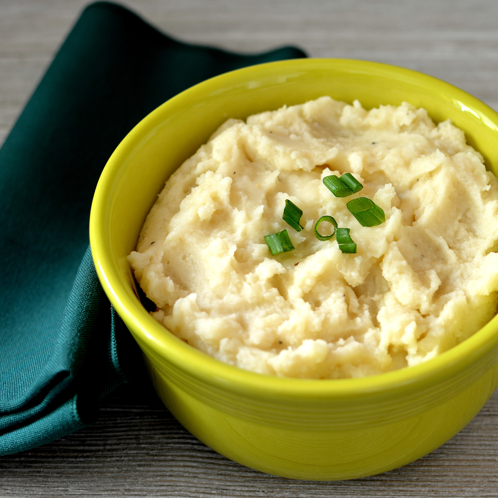

Mashed Potatoes

DESCRIPTION
You can make these ahead several days and store in the fridge.
If baking cold, let stand 30 minutes first.
Per Serving:
245 calories; protein 5.9g; carbohydrates 35.8g; fat 9.3g; cholesterol 24.7mg; sodium 369.6mg.
INGREDIENTS
- 5 pounds Yukon Gold potatoes, cubed
- 2 (3 ounce) packages cream cheese
- 8 ounces sour cream
- ½ cup milk
- 2 teaspoons onion salt
- ground black pepper to taste
STEPS
- Step
Preheat the oven to 325 degrees F (165 degrees C).
- Step
Place potatoes in a large pot of lightly salted water.
Bring to a boil, and cook until tender, about 15 minutes. Drain, and mash.
- Step
In a large bowl, mix mashed potatoes, cream cheese, sour cream, milk, onion salt, and pepper.
Transfer to a large casserole dish
- Step
Cover, and bake for 50 minutes in the preheated oven.